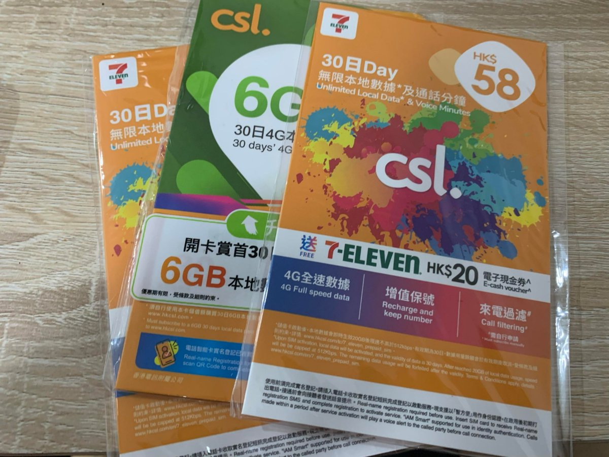
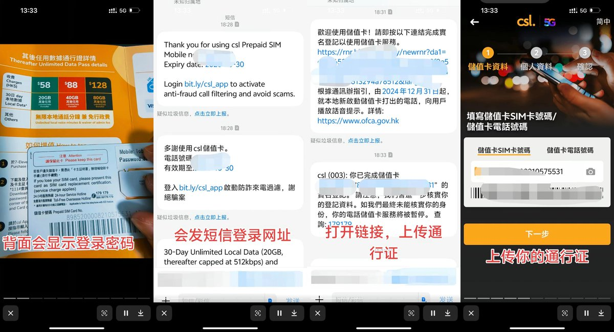
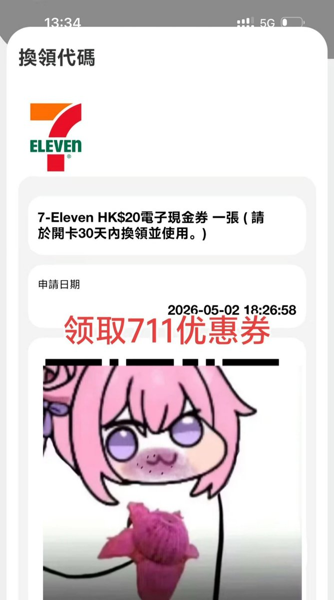
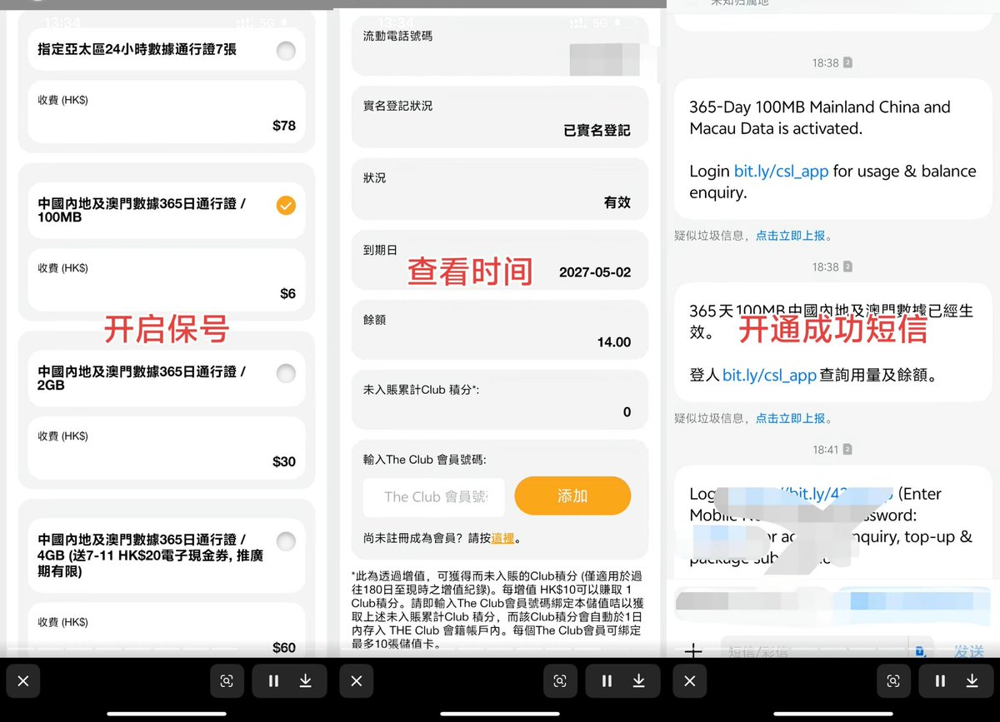

奶昔🥤
@realNyarime
聊一下香港的保号卡，在711便利店就能买到。以前是子品牌Club SIM，新的是Csl的卡板，售价为58港币
激活流程与Club相似，区别在于Csl卡在香港本地有5G网络访问权限：
1）提供30天本地无限流量、通话
2）送一张20HKD的711电子代金券
Csl会显示到期日，花6HKD购买一次中国内地及澳门365天100MB就能延续一年，并且这漫游流量包还能应急时拿来上个网？
不过有全能需求，建议选购中国电信香港大湾区蓝卡，半年50HKD流量包长期有效



